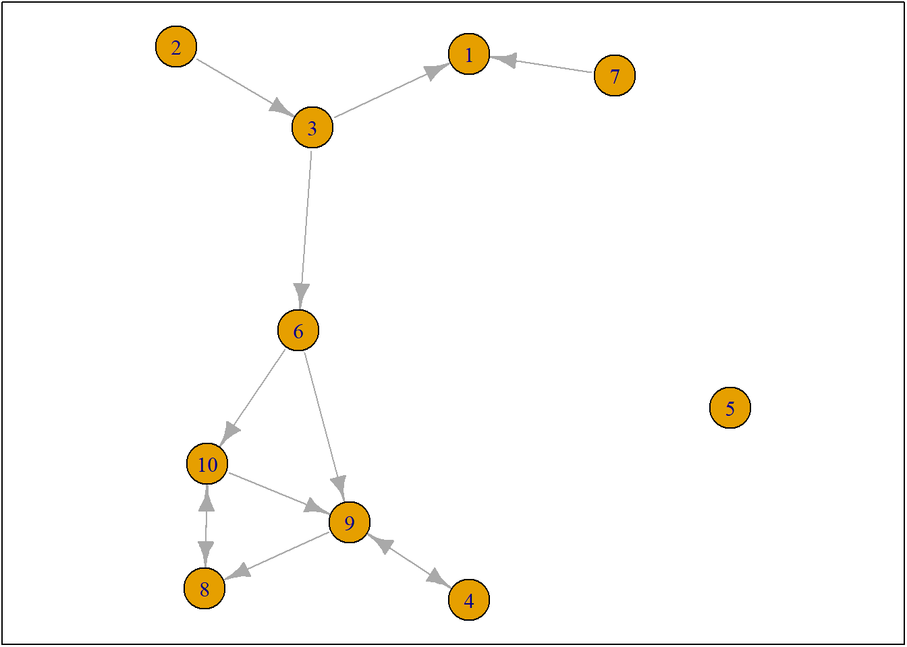
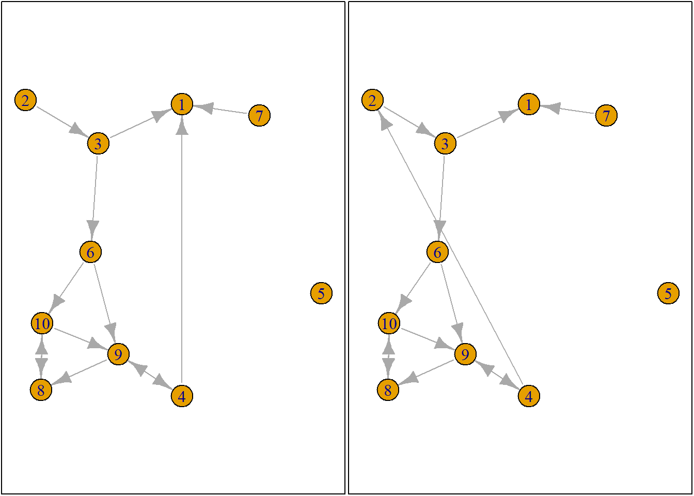
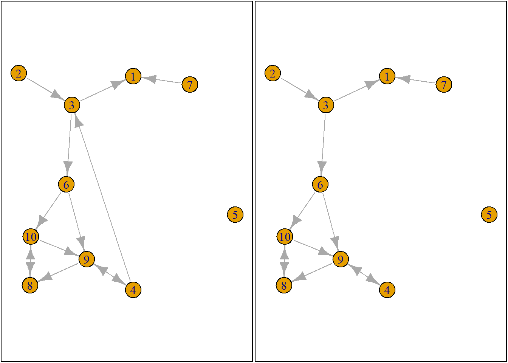
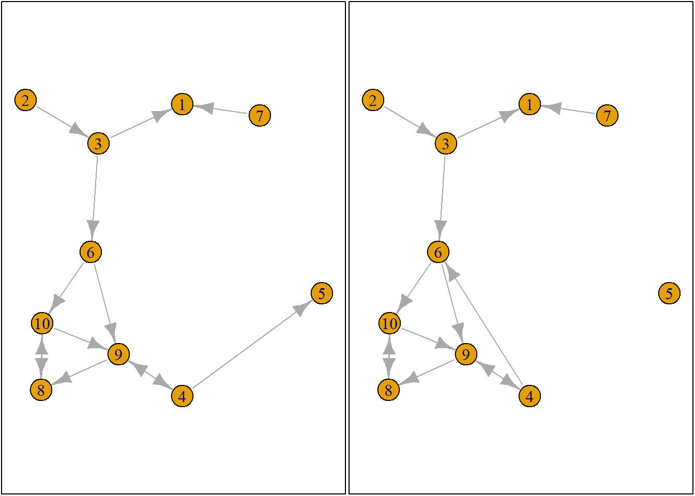
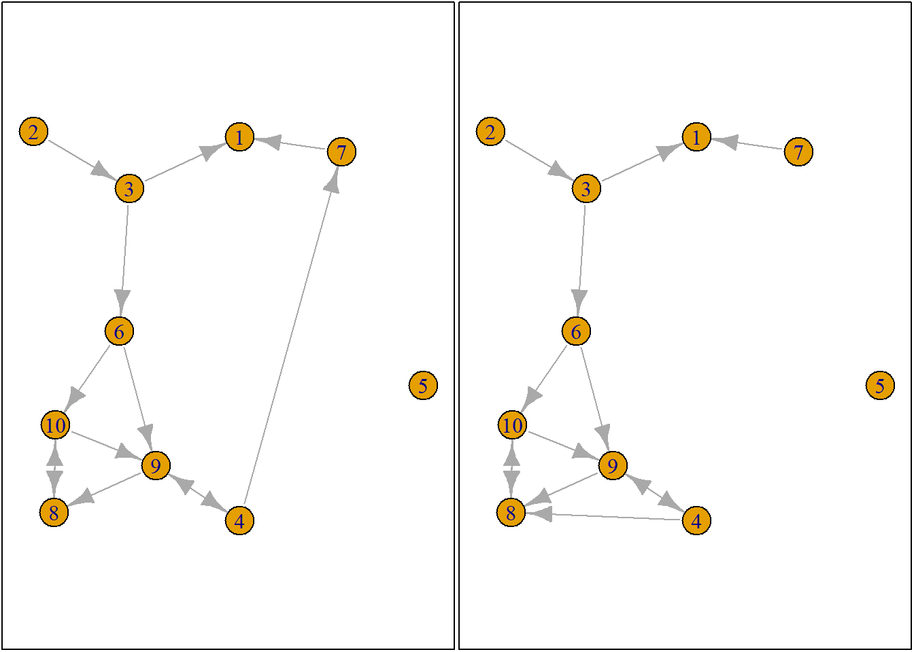
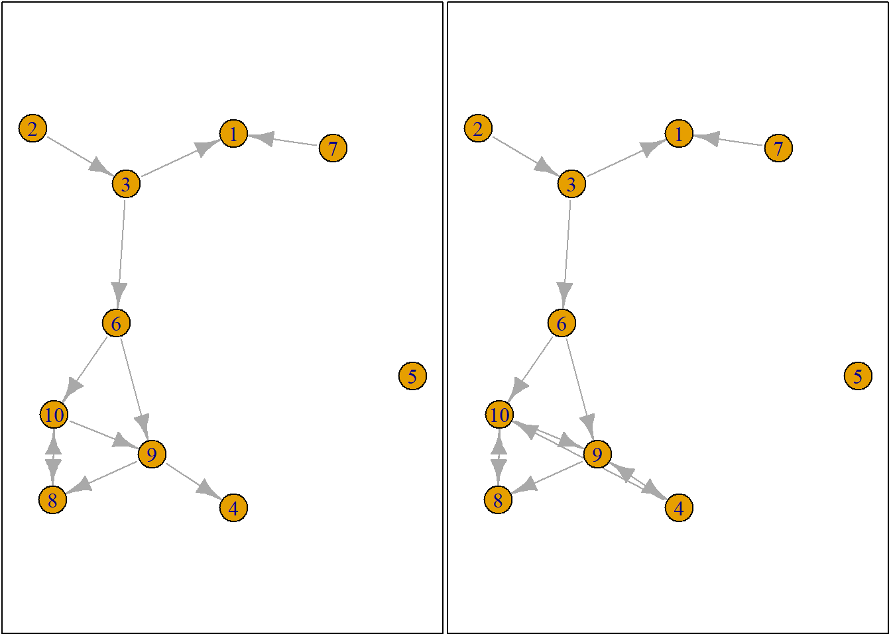

Using RSiena for evolutin of network Wave, Ego alters RSciena: Ego, alter, wave Reorganize into an array for RSciena
Set size of isolates to SMALL put all isolates in one place then you have enough room left to have a more “zoomed in” frame for the actual collaborator networks
Or just remove all isolates lol
Something I really need a grasp of (bc very poor prioritization)!
data were scraped at author level bc easier if you want to look at author “characteristics”
fpackage.check <- function(packages) {
lapply(packages, FUN = function(x) {
if (!require(x, character.only = TRUE)) {
install.packages(x, dependencies = TRUE)
library(x, character.only = TRUE)
}
})
}
fsave <- function(x, file = NULL, location = "./data/processed/") {
ifelse(!dir.exists("data"), dir.create("data"), FALSE)
ifelse(!dir.exists("data/processed"), dir.create("data/processed"), FALSE)
if (is.null(file))
file = deparse(substitute(x))
datename <- substr(gsub("[:-]", "", Sys.time()), 1, 8)
totalname <- paste(location, datename, file, ".rda", sep = "")
save(x, file = totalname) #need to fix if file is reloaded as input name, not as x.
}
fload <- function(filename) {
load(filename)
get(ls()[ls() != "filename"])
}
fshowdf <- function(x, ...) {
knitr::kable(x, digits = 2, "html", ...) %>%
kableExtra::kable_styling(bootstrap_options = c("striped", "hover")) %>%
kableExtra::scroll_box(width = "100%", height = "300px")
}RSiena RsienaTwoStep: this packages assesses the ministep assumption of RSiena but is useful for this tutorial devtools: to load from github igraph: plotting tools. For a tutorial on plotting networks, see 8
packages = c("RSiena", "devtools", "igraph")
fpackage.check(packages)#> [[1]]
#> NULL
#>
#> [[2]]
#> NULL
#>
#> [[3]]
#> NULLdevtools::install_github("JochemTolsma/RsienaTwoStep", build_vignettes = TRUE)
packages = c("RsienaTwoStep")
fpackage.check(packages)#> [[1]]
#> NULLts_net1#> [,1] [,2] [,3] [,4] [,5] [,6] [,7] [,8] [,9] [,10]
#> [1,] 0 0 0 0 0 0 0 0 0 0
#> [2,] 0 0 1 0 0 0 0 0 0 0
#> [3,] 1 0 0 0 0 1 0 0 0 0
#> [4,] 0 0 0 0 0 0 0 0 1 0
#> [5,] 0 0 0 0 0 0 0 0 0 0
#> [6,] 0 0 0 0 0 0 0 0 1 1
#> [7,] 1 0 0 0 0 0 0 0 0 0
#> [8,] 0 0 0 0 0 0 0 0 0 1
#> [9,] 0 0 0 1 0 0 0 1 0 0
#> [10,] 0 0 0 0 0 0 0 1 1 0# plot the network
net1g <- graph_from_adjacency_matrix(ts_net1, mode = "directed")
coords <- layout_(net1g, nicely()) #let us keep the layout
par(mar = c(0.1, 0.1, 0.1, 0.1))
{
plot.igraph(net1g, layout = coords)
graphics::box()
}
randomly select/sample an agent.
set.seed(24553253)
ego <- ts_select(net = ts_net1, steps = 1) #in rsienatwostep two actors may make a change together but here not
ego#> [1] 4options <- ts_alternatives_ministep(net = ts_net1, ego = ego)
# options
plots <- lapply(options, graph_from_adjacency_matrix, mode = "directed")
par(mar = c(0, 0, 0, 0) + 0.1)
par(mfrow = c(1, 2))
fplot <- function(x) {
plot.igraph(x, layout = coords, margin = 0)
graphics::box()
}
lapply(plots, fplot)
#> [[1]]
#> NULL
#>
#> [[2]]
#> NULL
#>
#> [[3]]
#> NULL
#>
#> [[4]]
#> NULL
#>
#> [[5]]
#> NULL
#>
#> [[6]]
#> NULL
#>
#> [[7]]
#> NULL
#>
#> [[8]]
#> NULL
#>
#> [[9]]
#> NULL
#>
#> [[10]]
#> NULL###7.5.3 Network statistics (see chapter 9 for more)
# count the number of ties ego sends to alters
ts_degree(net = options[[1]], ego = ego)#> [1] 2# or for all options
lapply(options, ts_degree, ego = ego)#> [[1]]
#> [1] 2
#>
#> [[2]]
#> [1] 2
#>
#> [[3]]
#> [1] 2
#>
#> [[4]]
#> [1] 1
#>
#> [[5]]
#> [1] 2
#>
#> [[6]]
#> [1] 2
#>
#> [[7]]
#> [1] 2
#>
#> [[8]]
#> [1] 2
#>
#> [[9]]
#> [1] 0
#>
#> [[10]]
#> [1] 2# count the number of reciprocated ties
lapply(options, ts_recip, ego = ego)#> [[1]]
#> [1] 1
#>
#> [[2]]
#> [1] 1
#>
#> [[3]]
#> [1] 1
#>
#> [[4]]
#> [1] 1
#>
#> [[5]]
#> [1] 1
#>
#> [[6]]
#> [1] 1
#>
#> [[7]]
#> [1] 1
#>
#> [[8]]
#> [1] 1
#>
#> [[9]]
#> [1] 0
#>
#> [[10]]
#> [1] 1In the package RsienaTwoStep there are functions for the following network statistics s :
degree: ts_degree()
reciprocity: ts_recip()
outdegree activity: ts_outAct()
indegree activity: ts_inAct()
outdegree popularity: ts_outPop()
indegree popularity: ts_inPop()
transitivity: ts_transTrip()
mediated transitivity: ts_transMedTrip()
transitive reciprocated triplets:
ts_transRecTrip()
number of three-cycles: ts_cycle3()
fi(x)=Σkβksik(x),
x= network
f = evaluation function (how we evaluate the nework)
i = the ego “i”
summing over k (k are diff. statistics (in our case degree and reciprocity))
beta = value of the statistic
s = the specific statistic for ego i for network statistics k for our network x
we are basically counting for each stats how many we have and multipyling it by…
option <- 4 # example of prior 4th option of the network of ego 4
ts_degree(options[[option]], ego = ego) * -1 + ts_recip(options[[option]], ego = ego) * 1.5#> [1] 0.5Value for the network OF ego FOUR is 0.5 (coming from (-1*1) + (1*1.5) = 0.5)
Or you could use the ts_eval().
eval <- sapply(options, FUN = ts_eval, ego = ego, statistics = list(ts_degree, ts_recip), parameters = c(-1,
1.5))
eval#> [1] -0.5 -0.5 -0.5 0.5 -0.5 -0.5 -0.5 -0.5 0.0 -0.5print("network with maximum evaluation score:")#> [1] "network with maximum evaluation score:"which.max(eval)#> [1] 4calculate the evaluation of all possible networks (10) of ego 4 :
eval <- sapply(options, FUN = ts_eval, ego = ego, statistics = list(ts_degree, ts_recip), parameters = c(-1,
1.5))
eval#> [1] -0.5 -0.5 -0.5 0.5 -0.5 -0.5 -0.5 -0.5 0.0 -0.5print("network with maximum evaluation score:")#> [1] "network with maximum evaluation score:"which.max(eval)#> [1] 4higher evaluation score means ego 4 is more likely to have this kind of network (option 4)
Translating the evaluation scores we just got into probabilities.
we know all probabilities will be between 0 and 1
and we know all the statistics (in our case the 10) will sum up to 1
1/e^-0.5 “e to the power of -0.5” = 0.6065306 (idk how to write this in R so I do not get an error that object e was not found :(
We sum all the evaluation scores e to power of (0.6 etc.)
# forcing ego to make a choice
choice <- sample(1:length(eval), size = 1, prob = exp(eval)/sum(exp(eval)))
print("choice:")#> [1] "choice:"choice#> [1] 10# print('network:') options[[choice]]When you run it multiple times, it is different one every time. (this is related to the see we set in the beginning. usually you would want to set the seed in a way that multiple people all get the same number) This example should ideally be 10.
–> This is how to perform ONE MINI STEP
If we want to do it for next ego (e.g. ego ) in the network, that ego’s network depends on our prior ego’s network (here it was ego/person 4)
Network changes of ego 2 depend on changes of ego 1. WHo is ego 1 and who is ego 2 is random.
–> Monte Carlo simulation
This is Agent-based modeling (if you do not use this for estimation). Aka. setting rules and seeing if the output is like what we expected and then trial and error to simulate the output as close as possible.
Let us now simulate how the network could evolve given:18
starting point at T1T1 is ts_net1
rate is set to 2
we as scientists think only network statistics degree and reciprocity are important
RSiena::siena07 has determined the parameters for
these statistics are -1 and 1.5 respectively
We adhere to the ministep assumption and hence set
p2step to c(1,0,0)
rate <- 2
degree <- -1
recip <- 1.5
ts_sims(nsims = 1, net = ts_net1, startvalues = c(rate, degree, recip), statistics = list(ts_degree,
ts_recip), p2step = c(1, 0, 0), chain = FALSE) #not that rate parameter is automatically included. #> [1] "nsim: 1"#> [[1]]
#> [,1] [,2] [,3] [,4] [,5] [,6] [,7] [,8] [,9] [,10]
#> [1,] 0 0 0 0 1 1 0 0 0 0
#> [2,] 0 0 1 0 0 1 0 0 0 0
#> [3,] 0 0 0 0 1 1 0 0 0 0
#> [4,] 0 0 0 0 0 1 0 0 1 1
#> [5,] 0 0 0 0 0 0 0 0 0 0
#> [6,] 0 0 0 0 0 0 0 0 1 1
#> [7,] 0 0 0 0 0 0 0 0 0 0
#> [8,] 0 0 0 0 0 0 0 0 0 0
#> [9,] 1 0 0 1 0 0 0 0 0 0
#> [10,] 0 0 0 0 0 0 0 1 0 0This is one of the possible outputs from all the choices the egos made in the networks in this simulation.
If we repeat this thousands of times, we can approximate a likely network constellation.
How does the estimation work?
Well, that is quite complicated. But it goes something like this:19
Define model: researcher includes effects
initial parameter values of effects (commonly ‘0’)
simulate an outcome network based on these parameter values
compare the network statistics of the simulated outcome network with the observed outcome network at (i.e. the target values)
tweak/update parameter values in some smart way
(there is plenty of maths on this but in our case manually: our
network density was too low, we looked at degree and reciprocity. We can
increase the value of degree and try to approximate a value where
changes in degree don’t really make a change anymore.
Then we would change reciprocity parameter, in our case: increase it. We
will have more reciprocity but also automatically increasing ties
because reciprocity DEPENDS on ties
Thus, we need to find a way to do this automatically that can adjust
both numbers at the same time.
We do not go about this ourselves though bc [as one may see] this is not
very efficient)
GOTO 3 (BREAK RULE: until parameter values cannot be improved anymore / or reached good fit)
simulate a bunch of outcome networks with the obtained parameter values and compare the expected values of statistics of the simulated outcome networks with the target values of the actual observed outcome network.
[Estimate a TARGET VALUE (outcome network). In an example we did it class: degree= 4, reciprocity 1]
we can assess the fit
estimate SE of the parameters
Let us suppose network s501 developed into
s502. For more information on these networks see
?s501.
To estimate this network with ts_estim20, we can do
the following:
# we do not calculate SE for now. ans <- ts_estim(net1 = s501, net2 = s502, statistics =
# list(ts_degree, ts_recip), p2step = c(1, 0, 0), # used two different networks conv = 0.01, phase3
# = TRUE, itef3 = 50, verbose = TRUE)
# looking at final result ans#output:
#> estim SE
#> rate 5.122247 1.1833275
#> degree -2.258332 0.1371387
#> recip 2.428552 0.2102846positive parameter = ” i like”
positive degrees? people like degrees (higher degrees)
Sometimes it’s easier to look at Ratios
Dividing two probabilities
when probability statistics of one network is one more than another network, the answer is the exponential of the parameter value in your model (the value we got for the network)
(given that alllllll other things are same between two things = ceterus paribus condition)
ceterus paribusis not fulfilledif we look at degrees and reciprocity htough, since reciprocity increasing also automatically makes the degrees increase
if stat, for reciprocity is 2 and degree is 1, then they are of the same unit (as opposed to other units like age, or years etc. )
descriptives, statistics
simple: higher scores = more positive
and recalculate in probability ratio: take exponent of parameter
value
“if netw. increases in this stats by one the probability ration is
this.”
(you could have HUGE parameters but they might not be relevant at all for the macro level change in networks)
Model of RSiena is modeling on EGO LEVEL only
do smth similar
test with Rsiena:
for egos: Given a choice, gender homphily is more important than education…
more nuanced: GIVEN the network at T1, …
MATCH YOUR HYPOTHESIS TO YOUR METHODS